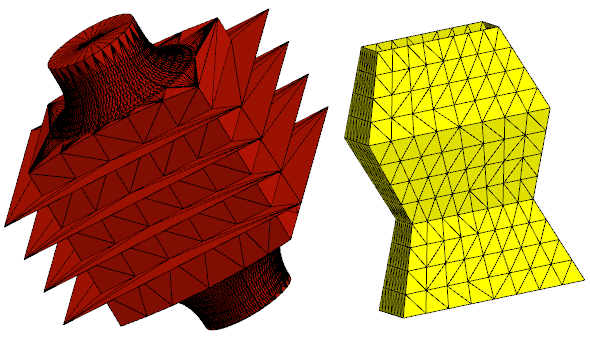
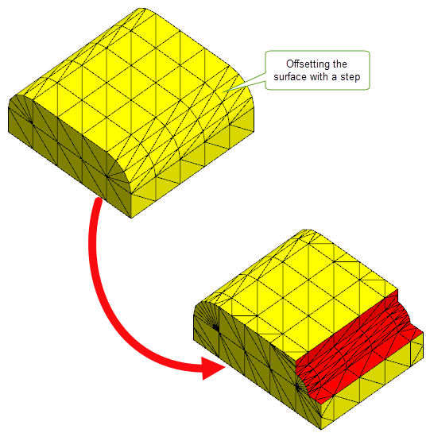
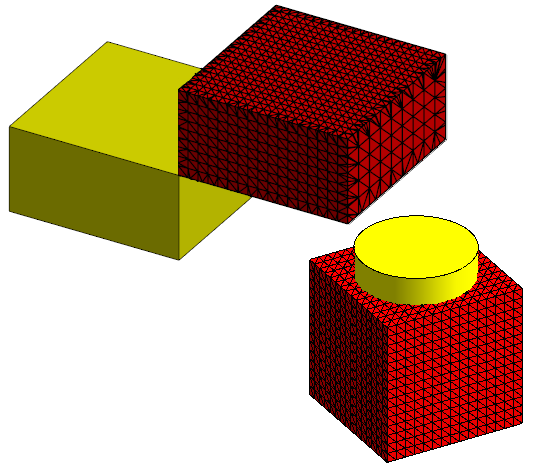

| |
Convergent Modeling |
| <<< B-Spline Curves and Surfaces | Chapters | Building Bodies from Profiles >>> |
CAD,CAM and CAE applications are increasingly relying on facet bodies to support workflows in growth areas like additive manufacturing, reverse engineering and virtual simulation. A facet body is a body with Parasolid topology that references geometric data composed of mesh and polyline data rather that classic Parasolid surface and curve geometry.
Figure 8-1 Examples of facet bodies
In order to perform classic modelling operations on a body, traditional CAD software needs to convert facet bodies to and from accurate CAD geometry. This conversion can result in additional complexity and errors in the result body. Therefore being able to perform classic modelling operations directly on facet bodies can dramatically improve your workflow.Parasolid gives you this ability thereby letting your application perform topological operations, such as booleans, sectioning, and offsetting on facet bodies.
Figure 8-2 Offsetting a surface of a mesh with a step
Parasolid Convergent Modeling greatly extends scope beyond pure facet bodies by providing full support for models containing an arbitrary mix of facet and classic geometries. Convergent Modeling support for mixed bodies enables more efficient workflows in a wide range of applications. For example, in reverse engineering processes it can be used to add precise analytic surfaces (e.g. machined holes) to scanned data of parts for re-manufacture. It can also be used in restoring design intent by adding precise, classic mating surfaces to an imported model or one that has undergone facet-based topology optimisations.
Figure 8-3 Example of a mixed bodies
Parasolid provides a range of APIs for creating facet geometry and for converting between facet and classic geometry.
Figure 8-4 Converting a classic body to a facet body
Figure 8-5 Converting a classic body to a mixed body
Figure 8-6 Creating a trimmed surface from a single mesh
There are fundamental differences between classic bodies and meshes which mean that some areas of functionality need to be treated differently in order to produce consistent and accurate results. Parasolid provides a range of mesh-specific operations which enable you to perform the following operations on meshes:
Figure 8-7 Identifying perimeters of selected groups of facets on a mesh
Parasolid also provides functionality for:
Figure 8-8 Repairing holes in the mesh
Support for facet geometry is deeply integrated into the Parasolid toolkit, and as a result, most areas of Parasolid functionality fully support bodies that have facet geometry attached.
For a full list of functions along with their level of support for facet geometry, see the PK Interface Programming Reference Manual.
| <<< B-Spline Curves and Surfaces | Chapters | Building Bodies from Profiles >>> |